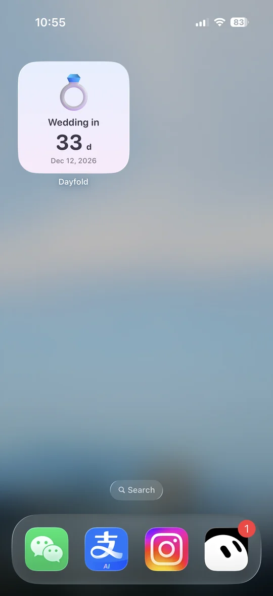
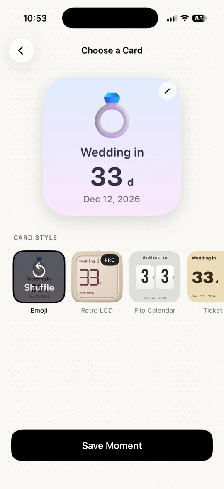

Count Down to a Wedding or a Trip on iPhone
For a wedding day or the day a vacation starts, Dayfold stores the date as a moment and can put the days remaining on an iPhone Lock Screen or Home Screen widget. The widget in the official screenshot is already a wedding countdown (“Wedding in 33 d”). A trip uses the same steps with a different name and date — there is no separate verified “vacation theme.” After the date passes, the card switches to a days-since count. Yearly repeats are documented for anniversaries, which is the right tool for a wedding anniversary once the day itself has passed.

Quick facts
| Wedding day | Future date; widget shows days remaining (official screenshot: “Wedding in 33 d”) |
|---|---|
| Trip / vacation start | Same widget, with the departure or first-day date you enter |
| Widgets | Small or medium Home Screen; Lock Screen |
| System | iPhone, iOS 17 or later |
| After the date | The moment counts up (days since) |
| Anniversary next year | Yearly repeats are supported for anniversaries |
| Not verified | A dedicated vacation theme, map layout, or itinerary |
| Price | Free to download; four active moments free; Dayfold Pro optional (monthly or one-time Lifetime) |
A wedding countdown you can actually see
Wedding dates already appear in Dayfold’s public screenshots, including a Home Screen widget that reads “Wedding in 33 d” for 12 December 2026. That is not a mock marketing layout — it is the shipping widget.
Create a moment named for the wedding (or for the couple), set the ceremony date, and add the widget. The small Home Screen size matches the hero image. A Lock Screen widget keeps the day count next to the clock. On iOS 17 or later you can point a widget at this moment even if another card is pinned as Primary.

The same steps for a vacation or trip
A holiday countdown is the same product, not a second mode. Name the moment after the trip (“Japan,” “Beach week,” “Home”) and set the date to the day you leave, or to the day you want to count toward. The widget will show days remaining, in the same sizes.
We do not have a verified travel theme, packing list, or flight board. If you also want a wedding countdown at the same time, create two moments — the free plan allows four.
How to add the widget
- Download Dayfold and open it once so iOS lists its widgets.
- Tap +. On Create a Moment, enter a name and the wedding date or the trip date.
- Optional: turn on Primary if this should be the default widget. Optional: add Reminders. For a wedding anniversary you plan to keep, you can set Repeat.
- Save, then choose a card style. Emoji, Flip Calendar and Ticket are free; the official “Choose a Card” screen also shows styles such as Retro LCD marked Pro.
- Lock Screen: touch and hold, tap Customize, tap Add Widgets, and choose Dayfold. On iOS 17 or later, tap the widget to select this moment if needed.
- Home Screen (optional): touch and hold the Home Screen, tap Edit, tap Add Widget, and choose a small or medium Dayfold widget.


After the wedding or after you get home
When the date has passed, Dayfold counts up: official site copy describes the card as the name plus “for” and the day count, and the Lock Screen widget as “N days ago.” That is a natural “days married” or “days since the trip” record if you want to keep it.
For a wedding anniversary that should return every year, use the documented yearly repeat for anniversaries rather than assuming a hidden calendar cycle. For a one-off vacation, delete the moment or leave the days-since count — there is no verified automatic “same trip next year” mode.
If you also want a days-together count from the day you met, that is a past-date moment; see Couple days together and anniversary widgets.
Free and optional Pro
Free to download, no account, stored on your iPhone (cloud sync is not available). Four active moments and three card styles are free. Dayfold Pro is optional, monthly or as a one-time Lifetime purchase.
FAQ
Can I put a wedding countdown on my iPhone Home Screen or Lock Screen?
Yes. Create a moment with the wedding date in Dayfold, then add a small or medium Home Screen widget or a Lock Screen widget. Dayfold requires iOS 17 or later.
Can I use the same app for a vacation or trip countdown?
Yes. Create a moment with the departure date or the first day of the trip. It uses the same countdown widget. There is no separate verified vacation theme.
What happens after the wedding or the trip?
Dayfold starts counting up: the card shows the name followed by “for” and the number of days, and the Lock Screen widget shows “N days ago.” You can keep it or delete it.
Can a wedding anniversary repeat every year?
Yes. Dayfold can repeat anniversaries yearly, so you do not have to create a new moment each year.
Is Dayfold free?
Yes. Dayfold is free to download. You can keep four active moments and use three card styles without paying. Dayfold Pro is an optional monthly plan or one-time Lifetime purchase.